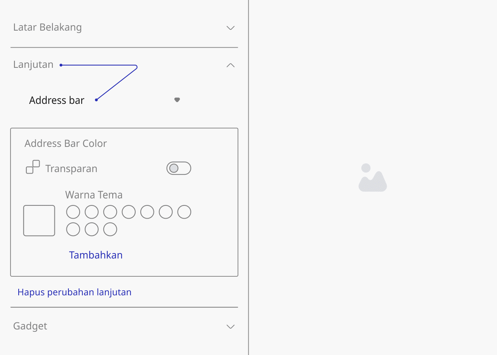
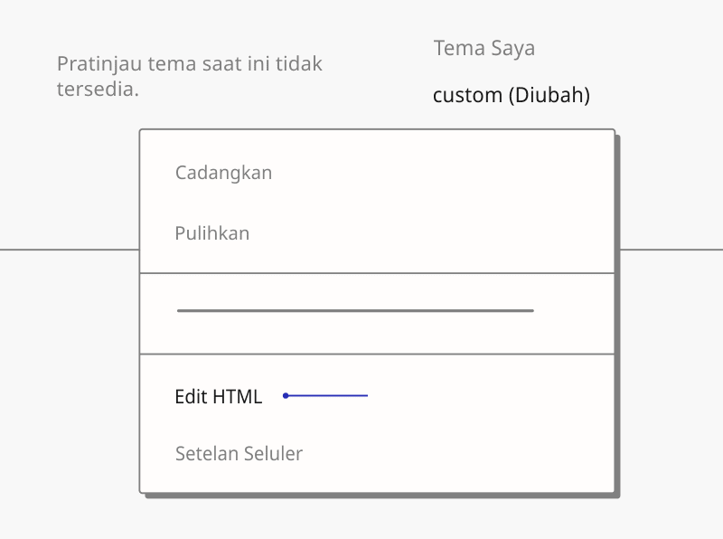
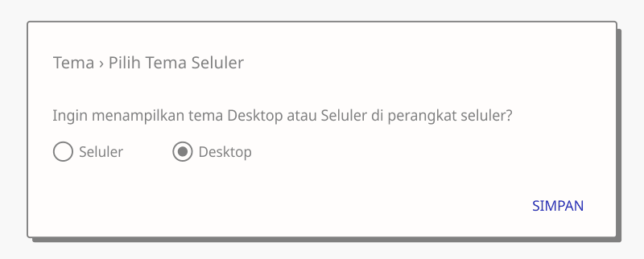

Getting Started Permulaan
Preparation
For the initial stage we want you to know some basic settings for Blogger such as how to customize or edit HTML, this will be needed when you use Blogger custom themes.
Blogger Theme Editor
Is a page where you can customize themes without editing the HTML, what you can edit includes the color/background, length and adding new CSS code, in built-in Blogger themes you can also change the font types. It's should be noted that AMP doesn't support this feature but some themes use CSS variables that put the color/background, length in one place which makes it easier for you to customize.
- First, on Blogger dashboard, go to Theme › Customize.
- You will be redirected to a new page with 3 menus on the left.
- Ylick on Advanced tab, in the dropdown menu select which component you want to customize.

Edit HTML
This feature is intended for advanced modification, which means you should at least have some understanding of HTML, CSS or javascript. This may be a bit difficult for those of you who are not familiar with coding, but as there are many tutorials and guides on the internet, everything can be learned gradually.
You can also install the theme through this feature by overwriting all HTML code of the previous theme, this method will reset all default settings of the previous theme including existing widgets, follow the steps below access the Blogger HTML Editor:
- In Blogger dashboard, click on Theme.
- Click icon next to the Customize button.
- Click Edit HTML, you will be redirected to the editing page.

How to jump directly to a specific widget
To improve the editing process, Blogger provides a feature to jump directly to a specific widget, you can press icon then the widget ID will be displayed, select the widget you want to edit.
Mobile settings
Basically this feature is used to determine the appearance of the blog when accessed via mobile, the mobile version is marked with ?m=1 at the end of the url and cannot be removed. Most custom themes already support responsive even some premium themes already support Adaptive Layout, therefore mobile settings are no longer needed, we recommend choosing a desktop theme on mobile display.
- In Blogger dashboard, click on Theme.
- Click icon next to the Customize button.
- Click Mobile Settings, in the option 'Want to display Desktop or Mobile theme on mobile devices?' select Desktop,

- Click Save.
Installation guide
The easiest way to install a Blogger theme is by uploading the .XML file directly:
- In Theme menu, click the icon next to the Customize button.
- Click Restore.
- Select the .XML file that you want to upload, click Upload then check for changes to your blog by clicking View Blog or refreshing your blog page directly.
This method will retain the widgets in the previous theme, the final appearance may be different from the theme demo, use the manual method to install the theme cleanly.
Manual installation (alternative)
The most recommended way to install a custom theme is to directly overwrite the HTML code of the previous theme, but as mentioned earlier, this method will reset all the widgets in the previous theme and replace them with built-in widgets from the new theme.
It is highly recommended to back up the previous theme first before using this method.
Copying the .XML code
Via Google Drive:
- In Google Drive, open the folder of the theme you purchased.
- Right-click on the theme you want to install.
- Select Open with › Text Editor.
- Wait until a new tab opens and loads perfectly, copy all the theme code that appears, press Ctrl+A › Ctrl+C for quick commands.
Via Notepad:
- Download the theme file you purchased through the provided Google Drive folder.
- Right-click › Open with, select Notepad
- Copy all the theme codes by pressing Ctrl+A › Ctrl+C
Overriding the previous theme code
- Go to Blogger HTML Editor
- Replace all code in the previous theme, right click › Select All (Ctrl+A).
- Press Ctrl+V to paste all the .XML code that was copied before.
- Save the theme by clicking icon on the top right of the HTML Editor.
Persiapan
Untuk tahap awal, kami ingin Anda mengetahui beberapa pengaturan dasar untuk Blogger seperti cara menyesuaikan atau mengedit HTML, hal ini akan dibutuhkan ketika Anda menggunakan tema khusus Blogger.
Editor Tema Blogger
Merupakan halaman dimana Anda dapat melakukan kustomisasi tema tanpa mengedit HTML, yang dapat Anda edit antara lain warna/latar belakang, panjang dan menambahkan kode CSS baru, pada tema bawaan Blogger Anda juga dapat mengubah jenis font. Perlu dicatat bahwa AMP tidak mendukung fitur ini, namun beberapa tema menggunakan variabel CSS yang menempatkan warna/latar belakang, panjang di satu tempat sehingga memudahkan Anda untuk melakukan kustomisasi.
- Pertama, pada dashboard Blogger, pergi menuju Tema › Sesuaikan.
- Anda akan diarahkan ke halaman baru dengan 3 menu di sebelah kiri.
- Klik tab Lanjutan, pada menu dropdown pilih komponen mana yang ingin Anda sesuaikan.
Edit HTML
Fitur ini ditujukan untuk modifikasi tingkat lanjut, yang berarti Anda setidaknya harus memiliki pemahaman tentang HTML, CSS atau javascript. Hal ini mungkin agak sulit bagi Anda yang tidak terbiasa dengan coding, tetapi karena ada banyak tutorial dan panduan di internet, semuanya dapat dipelajari secara bertahap.
Anda juga bisa memasang tema melalui fitur ini dengan menimpa semua kode HTML dari tema sebelumnya, cara ini akan mereset semua pengaturan default dari tema sebelumnya termasuk widget yang ada, ikuti langkah-langkah di bawah ini akses Blogger HTML Editor:
- Di dasbor Blogger, klik Tema.
- Klik ikon di sebelah tombol Sesuaikan.
- Klik Edit HTML, Anda akan diarahkan ke halaman pengeditan.
Bagaimana cara langsung lompat ke widget tertentu
Untuk mempermudah proses pengeditan, Blogger menyediakan fitur untuk melompat langsung ke widget tertentu, Anda dapat menekan ikon kemudian ID widget akan ditampilkan, pilih widget yang ingin Anda edit.
Setelan seluler
Pada dasarnya fitur ini digunakan untuk menentukan tampilan blog ketika diakses melalui seluler, versi seluler ditandai dengan ?m=1 di akhir url dan tidak dapat dihilangkan. Sebagian besar tema custom sudah mendukung responsive bahkan beberapa tema premium sudah mendukung Adaptive Layout, oleh karena itu setelan seluler tidak diperlukan lagi, kami sarankan untuk memilih tema desktop pada tampilan mobile.
- Di dasbor Blogger, klik Tema.
- Klik ikon di sebelah tombol Sesuaikan.
- Klik Setelan Seluler, pada opsi 'Ingin menampilkan tema Desktop atau Seluler di perangkat seluler?' pilih Desktop,
- Klik Simpan.
Panduan instalasi
Cara termudah untuk menginstal tema Blogger adalah dengan mengunggah file .XML secara langsung:
- Di menu Tema, klik ikon di sebelah tombol Sesuaikan.
- Klik Pulihkan.
- Pilih file .XML yang ingin Anda unggah, klik Unggah, lalu periksa perubahan pada blog Anda dengan mengeklik Lihat Blog atau menyegarkan halaman blog Anda secara langsung.
Cara ini akan mempertahankan widget pada tema sebelumnya, tampilan akhir mungkin akan berbeda dengan demo tema, gunakan cara manual untuk memasang tema dengan bersih.
Instal manual (alternatif)
Cara yang paling disarankan untuk menginstal tema khusus adalah dengan langsung menimpa kode HTML dari tema sebelumnya, tetapi seperti yang disinggung sebelumnya, metode ini akan mengatur ulang semua widget di tema sebelumnya dan menggantinya dengan widget bawaan dari tema baru.
Sangat disarankan untuk mencadangkan tema sebelumnya terlebih dahulu sebelum menggunakan metode ini.
Salin kode .XML
Melalui Google Drive:
- Di Google Drive, buka folder tema yang Anda beli.
- Klik kanan pada tema yang ingin Anda instal.
- Pilih Buka dengan › Text Editor.
- Tunggu hingga tab baru terbuka dan dimuat dengan sempurna, salin semua kode tema yang muncul, tekan Ctrl+A › Ctrl+C untuk perintah cepat.
Melalui Notepad:
- Unduh file tema yang Anda beli melalui folder Google Drive yang disediakan.
- klik kanan › Open with, pilih Notepad
- Salin semua kode tema dengan menekan Ctrl+A › Ctrl+C
Mengganti/menimpa kode tema sebelumnya
- Pergi ke Editor HTML Blogger
- Ganti semua kode pada tema sebelumnya, klik kanan › Select All (Ctrl+A).
- Tekan Ctrl+V untuk menempelkan semua kode .XML yang sudah disalin sebelumnya.
- Simpan tema dengan cara klik ikon yang ada pada kanan atas Editor HTML.